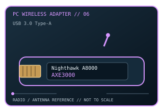

[ MODEL-SPECIFIC PC WI-FI HARDWARE ]
NETGEAR Nighthawk A8000 AXE3000 Wi-Fi 6E USB Adapter
Tri-band Wi-Fi 6E USB adapter for desktop or laptop upgrades; 6 GHz operation depends on the host OS and region. This record documents the named model and its labeled revision scope; it is not a claim that similarly named variants share identical drivers or radio limits.

IDENTIFICATION: Match the full product name, model label and hardware revision with its manufacturer page before choosing a driver. Regional channel and OS support can vary.
Dedicated wireless specifications
| Cataloged product | NETGEAR Nighthawk A8000 AXE3000 Wi-Fi 6E USB Adapter |
|---|---|
| Wi-Fi generation / standards | Wi-Fi 6E (IEEE 802.11ax extended into 6 GHz), backward-compatible with 802.11a/b/g/n/ac/ax. |
| Radio bands, channels & width | 2.4, 5 and 6 GHz. Up to 40 MHz on 2.4 GHz and 80 MHz on 5/6 GHz for the AXE3000-rated modes; 6 GHz channel numbers 1–233 are region-authorized, and 2.4/5 GHz channel sets are likewise regulatory/DFS dependent. |
| Spatial streams / nominal link rates | Tri-band AXE3000 class: nominal maxima are about 600 Mb/s (2.4 GHz) and 1,200 Mb/s each (5 and 6 GHz); USB adapter associates on one band at a time. |
| Host interface | USB 3.0 Type-A adapter; USB 2.0 hosts can provide lower capacity. NETGEAR installation requires the package/driver for the host OS. |
| Antenna arrangement | Integrated, foldable high-performance antenna assembly; hinge/position the adapter for best radio separation from the PC. |
| Operating-system compatibility | NETGEAR supports Windows 10/11 drivers; the 6 GHz band requires Windows 11, while Windows 10 clients are limited to 2.4/5 GHz per NETGEAR support. 6 GHz availability is also country-dependent. |
| Bluetooth | No Bluetooth radio. |
| Regulatory channel note | 6 GHz Wi-Fi 6E only where locally permitted and supported by the host OS/access point. NETGEAR notes Windows 11 is required to connect at 6 GHz; DFS and local channel regulations affect 5 GHz. |
Model-specific installation notes
The adapter’s three bands are alternative association bands rather than bonded channels. Do not treat summed AXE3000 class figures as a single-link rate.
1 external antenna are shown in this model’s source documentation. Install only with the correct host connector and driver package; antenna placement, local regulation and access-point capabilities affect operation.
Manufacturer sources
- NETGEAR Nighthawk A8000 product specificationsOfficial manufacturer source for product specifications, revision-specific software, or compatibility requirements.
- NETGEAR support note: A8000 and 6 GHz host requirementsOfficial manufacturer source for product specifications, revision-specific software, or compatibility requirements.
Source pages may describe a hardware family or provide revision-selected downloads. Manufacturer regional restrictions and current OS support take precedence over generic interface fit.